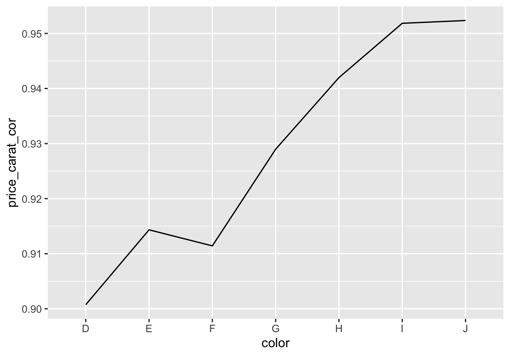
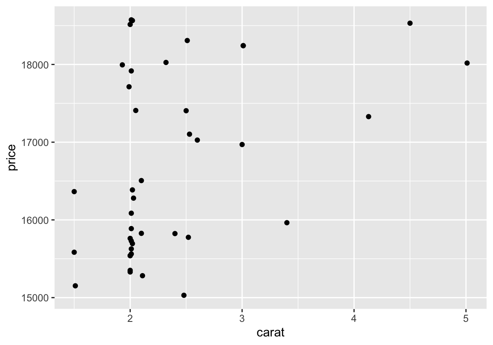
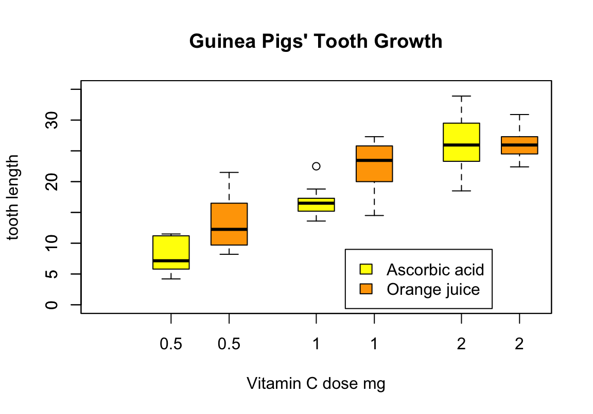

Extrasitzung
Einfach Textdateien speichern
Daten
## name genus vore order conservation
## 1 Cheetah Acinonyx carni Carnivora lc
## 2 Owl monkey Aotus omni Primates <NA>
## 3 Mountain beaver Aplodontia herbi Rodentia nt
## 4 Greater short-tailed shrew Blarina omni Soricomorpha lc
## 5 Cow Bos herbi Artiodactyla domesticated
## 6 Three-toed sloth Bradypus herbi Pilosa <NA>
## sleep_total sleep_rem sleep_cycle awake brainwt bodywt
## 1 12.1 NA NA 11.9 NA 50.000
## 2 17.0 1.8 NA 7.0 0.01550 0.480
## 3 14.4 2.4 NA 9.6 NA 1.350
## 4 14.9 2.3 0.1333333 9.1 0.00029 0.019
## 5 4.0 0.7 0.6666667 20.0 0.42300 600.000
## 6 14.4 2.2 0.7666667 9.6 NA 3.850sink
- Auch im Arbeitsverzeichnis (\(\rightarrow\)
getwd) caterzeugt den Textstring in seinem Argument auch in der Textdatei, nützlich für Titel, wenn mehrere Berechnungen in dieselbe Datei sollen\nerzeugt einen Zeilenumbruch- Mit
witherspart man sich ein kleines bisschen Schreibarbeit, weil man den Datensatz selbst nicht immer wieder innerhalb der Funktion eingeben muss - Wichtig:
sinkimmer mitsinkbeenden, wenn die Textdatei alle Infos enthält, die man abspeichern wollte
Funktionen aus dem tidyverse
Funktionen, die man kennen sollte
Beispiele
# Spalte für Faktor Issueness anlegen
d <- mutate(d, issue = case_when(
str_detect(d$V8, "_at") ~ "at-issue",
str_detect(d$V8, "_non") ~ "non-at-issue"))Weitere Beispiele
Mit dem altbekannten Diamantendatenset:
## carat cut color clarity depth table price x y z
## 1 0.23 Ideal E SI2 61.5 55 326 3.95 3.98 2.43
## 2 0.21 Premium E SI1 59.8 61 326 3.89 3.84 2.31
## 3 0.23 Good E VS1 56.9 65 327 4.05 4.07 2.31
## 4 0.29 Premium I VS2 62.4 58 334 4.20 4.23 2.63
## 5 0.31 Good J SI2 63.3 58 335 4.34 4.35 2.75
## 6 0.24 Very Good J VVS2 62.8 57 336 3.94 3.96 2.48Vorkommen zählen
## # A tibble: 6 x 3
## color cut n
## <ord> <ord> <int>
## 1 D Fair 163
## 2 D Good 662
## 3 D Very Good 1513
## 4 D Premium 1603
## 5 D Ideal 2834
## 6 E Fair 224Zählen und Sortieren
## # A tibble: 6 x 3
## color cut n
## <ord> <ord> <int>
## 1 J Fair 119
## 2 D Fair 163
## 3 I Fair 175
## 4 E Fair 224
## 5 H Fair 303
## 6 J Good 307Sortieren und Spalten auswählen
## price carat color cut
## 1 18823 2.29 I Premium
## 2 18818 2.00 G Very Good
## 3 18806 1.51 G Ideal
## 4 18804 2.07 G Ideal
## 5 18803 2.00 H Very Good
## 6 18797 2.29 I PremiumGruppieren und rechnen
## # A tibble: 7 x 3
## color mprice medprice
## <ord> <dbl> <dbl>
## 1 D 3170. 1838
## 2 E 3077. 1739
## 3 F 3725. 2344.
## 4 G 3999. 2242
## 5 H 4487. 3460
## 6 I 5092. 3730
## 7 J 5324. 4234Gruppieren, berechnen, filtern
# nach schliff gruppieren
# spalte mit mittlerem preis hinzufügen
# und maximale verkaufspreise anzeigen lassen
d %>% group_by(cut) %>%
mutate(mprice = mean(price)) %>%
filter(price == max(price))## # A tibble: 5 x 11
## # Groups: cut [5]
## carat cut color clarity depth table price x y z mprice
## <dbl> <ord> <ord> <ord> <dbl> <dbl> <int> <dbl> <dbl> <dbl> <dbl>
## 1 2.01 Fair G SI1 70.6 64 18574 7.43 6.64 4.69 4359.
## 2 2.8 Good G SI2 63.8 58 18788 8.9 8.85 0 3929.
## 3 1.51 Ideal G IF 61.7 55 18806 7.37 7.41 4.56 3458.
## 4 2 Very Good G SI1 63.5 56 18818 7.9 7.97 5.04 3982.
## 5 2.29 Premium I VS2 60.8 60 18823 8.5 8.47 5.16 4584.Gruppenkorrelationen plotten
# nach farbe gruppieren
# und korrelation zwischen preis und gewicht berechnen
# und plotten
d %>% group_by(color) %>%
summarise(price_carat_cor = cor(price, carat)) %>%
ggplot(aes(color, price_carat_cor, group = 1)) +
geom_path()
Filtern und plotten
# nur zeilen mit preis > 15000 und schliff == Fair
# im plot darstellen
d %>% filter(price > 15000, cut == "Fair") %>%
ggplot(aes(carat, price)) +
geom_point()
Ein Tutorial
For-Loops
Loops
# ausgabe aller geraden zahlen zwischen 1 und 15
for (i in 1:15) { # 1:15 = zahlenreihe 1 bis 15
if (i %% 2) { # wenn die jeweilige zahl durch 2 teilbar ist, ...
next} # dann gehe zum nächsten Schritt und
print(i) # gib sie aus
}## [1] 2
## [1] 4
## [1] 6
## [1] 8
## [1] 10
## [1] 12
## [1] 14Loops
# summe: x_1 + x_2 + ... + x_n
my.sum <- function(vector) {
sum <- 0 # ist nötig, damit wir immer wieder neu bei
# null beginnen, wenn wir die funktion nochmal benutzen wollen
for (i in vector) {sum <- sum + i
}
sum
}
a <- c(1, 2, 3, 4, 5, 6)
my.sum(a)## [1] 21## [1] 21## [1] 21Übung
- Schreibe eine Funktion “my.mean”, die den Mittelwert eines Vektors berechnet
- Schreibe eine Funktion “my.var”, die die Varianz eines Vektors berechnet
Lösungen
- Schreibe eine Funktion “my.mean”, die den Mittelwert eines Vektors berechnet
# mittelwert: (x_1 + x_2 + ... + x_n)/n
my.mean <- function(vector) {
sum <- 0 # wie oben
for (i in vector) {
sum <- sum + i
}
sum / length(vector)
}
a <- c(1, 2, 3, 4, 5, 6)
my.mean(a) == mean(a)## [1] TRUE## [1] 3.5Lösungen
- Schreibe eine Funktion “my.var”, die die Varianz eines Vektors berechnet
# varianz:
# ((x_1-x_mittelwert)+(x_n-x_mittelwert) ... + (x_n-x_mittelwert))/n
my.var <- function(vector) {
sum <- 0
meanie <- my.mean(vector)
for (i in vector) {
sum <- sum + (i - meanie)^2
}
sum / (length(vector) - 1)
}
my.var(a) == var(a)## [1] TRUE## [1] 3.5Funktionen, die das Coden erleichtern
Daten
## count spray
## 1 10 A
## 2 7 A
## 3 20 A
## 4 14 A
## 5 14 A
## 6 12 A## 'data.frame': 72 obs. of 2 variables:
## $ count: num 10 7 20 14 14 12 10 23 17 20 ...
## $ spray: Factor w/ 6 levels "A","B","C","D",..: 1 1 1 1 1 1 1 1 1 1 ...by()
## d$spray: A
## [1] 14.5
## ------------------------------------------------------------
## d$spray: B
## [1] 15.33333
## ------------------------------------------------------------
## d$spray: C
## [1] 2.083333
## ------------------------------------------------------------
## d$spray: D
## [1] 4.916667
## ------------------------------------------------------------
## d$spray: E
## [1] 3.5
## ------------------------------------------------------------
## d$spray: F
## [1] 16.66667with()
Struktur:
- with(Variable, Befehl/Funktion)
Der Befehl/die Funktion innerhalb von within wird mit der angegebenen Variable durchgeführt
with()
Hier die Daten, mit denen ich die Funktionsweise von with illustrieren werde:
## len supp dose
## 1 4.2 VC 0.5
## 2 11.5 VC 0.5
## 3 7.3 VC 0.5
## 4 5.8 VC 0.5
## 5 6.4 VC 0.5
## 6 10.0 VC 0.5## 'data.frame': 60 obs. of 3 variables:
## $ len : num 4.2 11.5 7.3 5.8 6.4 10 11.2 11.2 5.2 7 ...
## $ supp: Factor w/ 2 levels "OJ","VC": 2 2 2 2 2 2 2 2 2 2 ...
## $ dose: num 0.5 0.5 0.5 0.5 0.5 0.5 0.5 0.5 0.5 0.5 ...with()
with(ToothGrowth, {
boxplot(len ~ dose, boxwex = 0.25, at = 1:3 - 0.2,
subset = (supp == "VC"), col = "yellow",
main = "Guinea Pigs' Tooth Growth",
xlab = "Vitamin C dose mg",
ylab = "tooth length", ylim = c(0, 35))
boxplot(len ~ dose, add = TRUE, boxwex = 0.25, at = 1:3 + 0.2,
subset = supp == "OJ", col = "orange")
legend(2, 9, c("Ascorbic acid", "Orange juice"),
fill = c("yellow", "orange"))
})
attach()
Alle folgenden Befehle werden mit der angegebenen Variable ausgeführt
Eignet sich, wenn mit wenigen Tabellen/Variablen gleichzeitig gearbeitet wird
Eine Variable, die mit attach ausgewählt wurde, kann mit
detachwieder entfernt werden, wenn beispielsweise eine neue Variable verwendet werden soll
## [1] 9.5## [1] 7.203286## [1] 7## [1] 5apply()-Familie
tapply(Vektorvariable/Spaltenvariable, INDEX = Vektorvariable/Spalte, Befehl)
- für Tabellen/Data-frames
- Als zweites Argument muss eine Spalte angegeben werden, nach deren Inhalt die
Funktion ausgeführt wird
- Es werden quasi Subsets nach dem Inhalt der angegebenen Spalte erstellt, über die dann einzeln der Befehl angewandt wird.
- Alternative Befehle:
sapply,lapply
apply()-Familie
# Berechnet Mittelwert und Median der Insektenanzahl
# für den jeweiligen Typ von Insektenspray
tapply(d$count, d$spray, mean)## A B C D E F
## 14.500000 15.333333 2.083333 4.916667 3.500000 16.666667## A B C D E F
## 14.0 16.5 1.5 5.0 3.0 15.0Unterschied by() und tapply()
Janitor-Paket
Bessere Häufigkeitstabellen
- Alternative zu
table - Gibt Ergebnisse als data frame aus
## color Fair Good Very Good Premium Ideal
## D 163 662 1513 1603 2834
## E 224 933 2400 2337 3903
## F 312 909 2164 2331 3826
## G 314 871 2299 2924 4884
## H 303 702 1824 2360 3115
## I 175 522 1204 1428 2093
## J 119 307 678 808 896## color Fair Good Very Good Premium Ideal
## D 0.02405904 0.09771218 0.2233210 0.2366052 0.4183026
## E 0.02286414 0.09523323 0.2449730 0.2385424 0.3983873
## F 0.03269755 0.09526305 0.2267868 0.2442884 0.4009642
## G 0.02780730 0.07713425 0.2035955 0.2589444 0.4325186
## H 0.03648844 0.08453757 0.2196532 0.2842004 0.3751204
## I 0.03227591 0.09627444 0.2220583 0.2633714 0.3860199
## J 0.04237892 0.10933048 0.2414530 0.2877493 0.3190883Bessere Häufigkeitstabellen
denominator-Argument verändert, wie Häufigkeiten berechnet werdenadorn_pct_formatting: *100 plus %- zusätzlich möglich:
adorn_totals
## color Fair Good Very Good Premium Ideal
## D 10.1% 13.5% 12.5% 11.6% 13.2%
## E 13.9% 19.0% 19.9% 16.9% 18.1%
## F 19.4% 18.5% 17.9% 16.9% 17.8%
## G 19.5% 17.8% 19.0% 21.2% 22.7%
## H 18.8% 14.3% 15.1% 17.1% 14.5%
## I 10.9% 10.6% 10.0% 10.4% 9.7%
## J 7.4% 6.3% 5.6% 5.9% 4.2%## color Fair Good Very Good Premium Ideal
## D 0.3% 1.2% 2.8% 3.0% 5.3%
## E 0.4% 1.7% 4.4% 4.3% 7.2%
## F 0.6% 1.7% 4.0% 4.3% 7.1%
## G 0.6% 1.6% 4.3% 5.4% 9.1%
## H 0.6% 1.3% 3.4% 4.4% 5.8%
## I 0.3% 1.0% 2.2% 2.6% 3.9%
## J 0.2% 0.6% 1.3% 1.5% 1.7%Leere Zeilen und Spalten entfernen
## v1 v2 v3
## 1 1 NA a
## 2 NA NA <NA>
## 3 3 NA b## v1 v3
## 1 1 a
## 3 3 bSpalten mit konstanten Werten entfernen
## good boring
## 1 1 the same
## 2 2 the same
## 3 3 the same## good
## 1 1
## 2 2
## 3 3clean_names()
# Create a data.frame with dirty names
test_df <- as.data.frame(matrix(ncol = 6))
names(test_df) <- c("firstName", "ábc@!*", "% successful (2009)",
"REPEAT VALUE", "REPEAT VALUE", "")
test_df## firstName ábc@!* % successful (2009) REPEAT VALUE REPEAT VALUE
## 1 NA NA NA NA NA NA## first_name abc percent_successful_2009 repeat_value repeat_value_2 x
## 1 NA NA NA NA NA NABildverarbeitung (und -bearbeitung) in R
Popularity Contest
fin
Anhang: Die wichtigsten Funktionen
Allgemein
Hier geklaut: http://www.sr.bham.ac.uk/~ajrs/R/r-function_list.html
builtins() # List all built-in functions
options() # Set options to control how R computes & displays results
?NA # Help page on handling of missing data values
abs(x) # The absolute value of "x"
append() # Add elements to a vector
c(x) # A generic function which combines its arguments
cat(x) # Prints the arguments
cbind() # Combine vectors by row/column (cf. "paste" in Unix)
diff(x) # Returns suitably lagged and iterated differences
gl() # Generate factors with the pattern of their levels
grep() # Pattern matching
identical() # Test if 2 objects are *exactly* equal
jitter() # Add a small amount of noise to a numeric vector
julian() # Return Julian date
length(x) # Return no. of elements in vector x
ls() # List objects in current environment
mat.or.vec() # Create a matrix or vector
paste(x) # Concatenate vectors after converting to character
range(x) # Returns the minimum and maximum of x
rep(1,5) # Repeat the number 1 five times
rev(x) # List the elements of "x" in reverse order
seq(1,10,0.4) # Generate a sequence (1 -> 10, spaced by 0.4)
sequence() # Create a vector of sequences
sign(x) # Returns the signs of the elements of x
sort(x) # Sort the vector x
order(x) # list sorted element numbers of x
tolower(),toupper() # Convert string to lower/upper case letters
unique(x) # Remove duplicate entries from vector
system("cmd") # Execute "cmd" in operating system (outside of R)
vector() # Produces a vector of given length and mode
formatC(x) # Format x using 'C' style formatting specifications
floor(x), ceiling(x), round(x), signif(x), trunc(x) # rounding functions
Sys.getenv(x) # Get the value of the environment variable "x"
Sys.putenv(x) # Set the value of the environment variable "x"
Sys.time() # Return system time
Sys.Date() # Return system date
getwd() # Return working directory
setwd() # Set working directory
?files # Help on low-level interface to file system
list.files() # List files in a give directory
file.info() # Get information about files
# Built-in constants:
pi,letters,LETTERS # Pi, lower & uppercase letters, e.g. letters[7] = "g"
month.abb,month.name # Abbreviated & full names for monthsMathe
Hier geklaut: http://www.sr.bham.ac.uk/~ajrs/R/r-function_list.html
log(x),logb(),log10(),log2(),exp(),expm1(),log1p(),sqrt() # Fairly obvious
cos(),sin(),tan(),acos(),asin(),atan(),atan2() # Usual stuff
cosh(),sinh(),tanh(),acosh(),asinh(),atanh() # Hyperbolic functions
union(),intersect(),setdiff(),setequal() # Set operations
+,-,*,/,^,%%,%/% # Arithmetic operators
<,>,<=,>=,==,!= # Comparison operators
eigen() # Computes eigenvalues and eigenvectors
deriv() # Symbolic and algorithmic derivatives of simple expressions
integrate() # Adaptive quadrature over a finite or infinite interval.
sqrt(),sum()
?Control # Help on control flow statements (e.g. if, for, while)
?Extract # Help on operators acting to extract or replace subsets of vectors
?Logic # Help on logical operators
?Mod # Help on functions which support complex arithmetic in R
?Paren # Help on parentheses
?regex # Help on regular expressions used in R
?Syntax # Help on R syntax and giving the precedence of operators
?Special # Help on special functions related to beta and gamma functionsStatistik
Hier geklaut: http://www.sr.bham.ac.uk/~ajrs/R/r-function_list.html
help(package=stats) # List all stats functions
?Chisquare # Help on chi-squared distribution functions
?Poisson # Help on Poisson distribution functions
help(package=survival) # Survival analysis
cor.test() # Perform correlation test
cumsum(); cumprod(); cummin(); cummax() # Cumuluative functions for vectors
density(x) # Compute kernel density estimates
ks.test() # Performs one or two sample Kolmogorov-Smirnov tests
loess(), lowess() # Scatter plot smoothing
mad() # Calculate median absolute deviation
mean(x), weighted.mean(x), median(x), min(x), max(x), quantile(x)
rnorm(), runif() # Generate random data with Gaussian/uniform distribution
splinefun() # Perform spline interpolation
smooth.spline() # Fits a cubic smoothing spline
sd() # Calculate standard deviation
summary(x) # Returns a summary of x: mean, min, max etc.
t.test() # Student's t-test
var() # Calculate variance
sample() # Random samples & permutations
ecdf() # Empirical Cumulative Distribution Function
qqplot() # quantile-quantile plot